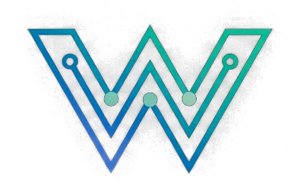
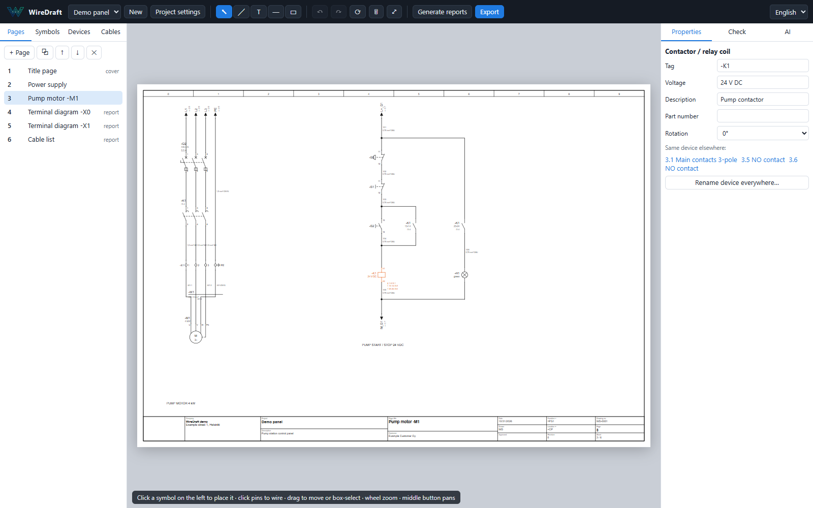
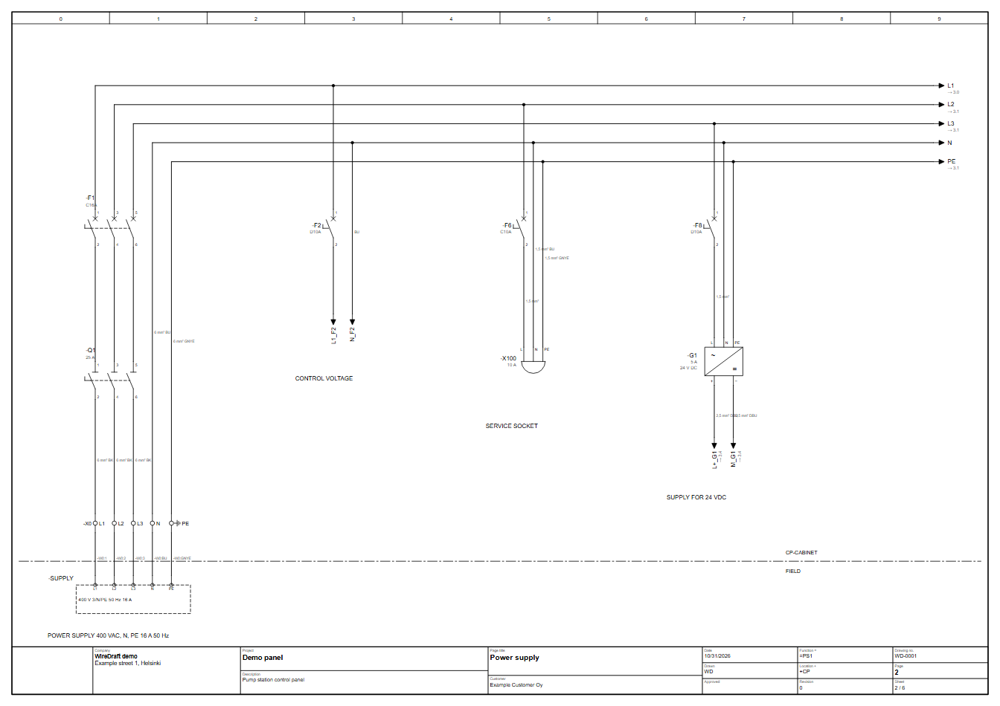
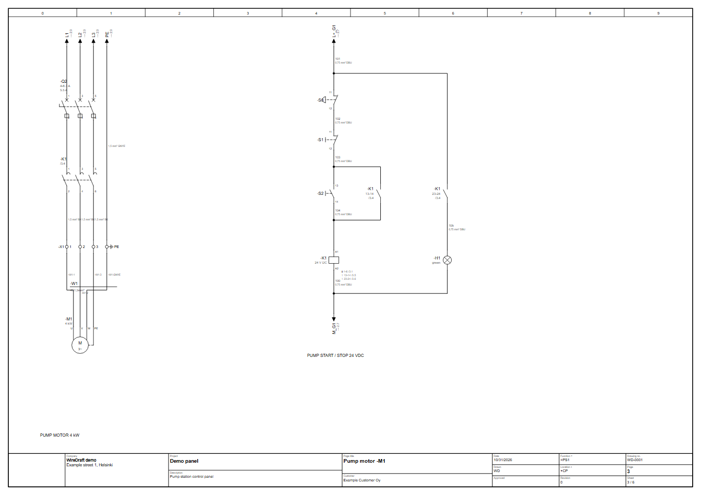
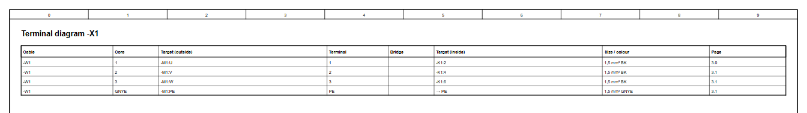
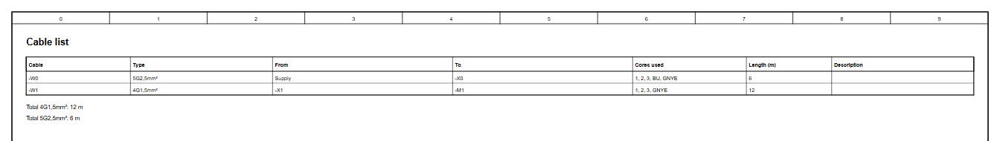
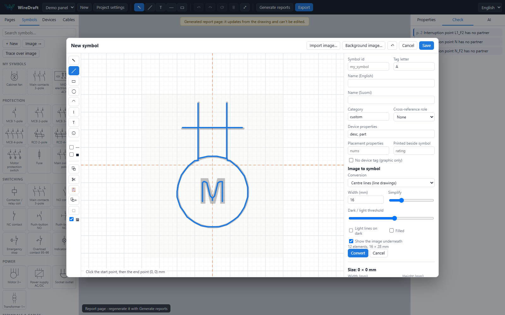
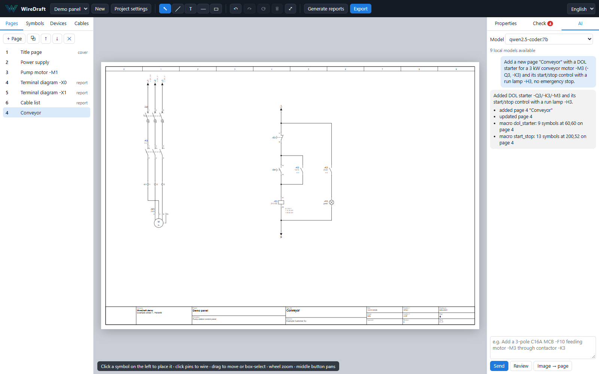
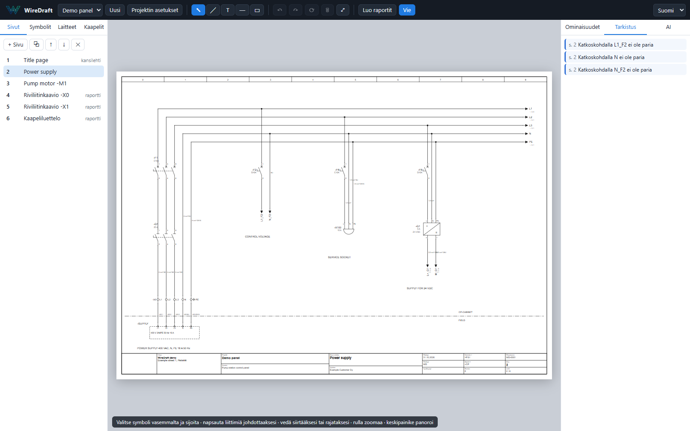

<title>WireDraft</title>
<meta name="claude:viewport-fit-sides" content="cover">
<link rel="preconnect" href="https://fonts.googleapis.com">
<link rel="stylesheet" href="https://fonts.googleapis.com/css2?family=Barlow+Condensed:wght@500;600;700&family=Public+Sans:ital,wght@0,400;0,600;0,700;1,400&family=JetBrains+Mono:wght@400;600&display=swap">
<style>
/* Layout: the site is a drawing set. A 0–9 column strip heads every view, content sits on the sheet,
   and a title block closes it, numbering the views as sheets 1–3. */
:root {
  --paper: #fbfaff;      /* sheet */
  --rule: #e3e1e4;       /* frame lines, quiet surfaces */
  --graphite: #676566;   /* secondary text */
  --ink: #34333b;        /* text, dark bands */
  --signal: #f03f35;     /* the one accent: tags, calls to action */
  --surface: #ffffff;
  --band: #34333b;  --band-fg: #fbfaff;  --band-muted: #b9b7bc;
  --on-signal: #ffffff;
  --display: "Barlow Condensed", "Arial Narrow", "Roboto Condensed", sans-serif;
  --body: "Public Sans", "Segoe UI", system-ui, sans-serif;
  --mono: "JetBrains Mono", ui-monospace, Consolas, monospace;
  --wrap: 1180px;
}
@media (prefers-color-scheme: dark) { :root:not([data-theme="light"]) {
  --paper: #232228; --rule: #3d3c44; --graphite: #a5a3a8; --ink: #f1f0f5; --signal: #f4544a;
  --surface: #2c2b32; --band: #18171c; --band-fg: #f1f0f5; --band-muted: #9e9ca3; --on-signal: #ffffff; color-scheme: dark; } }
:root[data-theme="dark"] {
  --paper: #232228; --rule: #3d3c44; --graphite: #a5a3a8; --ink: #f1f0f5; --signal: #f4544a;
  --surface: #2c2b32; --band: #18171c; --band-fg: #f1f0f5; --band-muted: #9e9ca3; --on-signal: #ffffff; color-scheme: dark; }

* { box-sizing: border-box; }
body { background: var(--paper); color: var(--ink); font: 400 17px/1.6 var(--body); }
body::before { content: ""; position: fixed; inset: 0 0 auto; height: env(safe-area-inset-top, 0px); z-index: 10; background: var(--paper); }
.wrap { max-width: var(--wrap); margin: 0 auto; padding-left: max(16px, env(safe-area-inset-left, 0px)); padding-right: max(16px, env(safe-area-inset-right, 0px)); }
h1, h2, h3 { font-family: var(--display); font-weight: 700; line-height: 1.02; letter-spacing: .005em; text-wrap: balance; margin: 0; }
h1 { font-size: clamp(2.8rem, 7vw, 5.6rem); }
h2 { font-size: clamp(2rem, 4.2vw, 3.1rem); }
h3 { font-size: 1.55rem; font-weight: 600; }
p { margin: 0; }
a { color: inherit; }
.tag { font-family: var(--mono); font-size: .82rem; color: var(--signal); letter-spacing: .02em; }
.eyebrow { font-family: var(--mono); font-size: .78rem; text-transform: uppercase; letter-spacing: .14em; color: var(--graphite); }
.muted { color: var(--graphite); }
.measure { max-width: 64ch; }
img { display: block; max-width: 100%; height: auto; }
:focus-visible { outline: 2px solid var(--signal); outline-offset: 3px; }

/* ---------- header ---------- */
.top { position: sticky; top: env(safe-area-inset-top, 0px); z-index: 5; background: var(--paper); border-bottom: 1px solid var(--rule); }
.top .wrap { display: flex; align-items: center; flex-wrap: wrap; gap: 8px 24px; padding-block: 12px; }
.brand { display: flex; align-items: center; gap: 10px; text-decoration: none; font-family: var(--display); font-size: 1.6rem; font-weight: 700; letter-spacing: .04em; }
.brand img { width: 34px; height: 34px; }
.nav { display: flex; gap: 4px; margin-left: auto; flex-wrap: wrap; }
.nav a { text-decoration: none; padding: 6px 12px; border-radius: 4px; font-weight: 600; font-size: .95rem; color: var(--graphite); }
.nav a:hover { color: var(--ink); }
.nav a[aria-current="page"] { color: var(--ink); box-shadow: inset 0 -2px 0 var(--signal); border-radius: 0; }

/* column strip: the 0–9 grid every drawing sheet carries */
.strip { display: grid; grid-template-columns: repeat(10, 1fr); border-bottom: 1px solid var(--rule); }
.strip span { font-family: var(--mono); font-size: .7rem; color: var(--graphite); text-align: center; padding: 3px 0; border-left: 1px solid var(--rule); }
.strip span:first-child { border-left: 0; }

/* ---------- buttons ---------- */
.btn { display: inline-flex; align-items: center; gap: 8px; padding: 12px 20px; border-radius: 4px; font: 600 1rem var(--body); text-decoration: none; border: 1.5px solid var(--ink); color: var(--ink); background: transparent; cursor: pointer; }
.btn:hover { background: var(--rule); }
.btn.primary { background: var(--signal); border-color: var(--signal); color: var(--on-signal); }
.btn.primary:hover { filter: brightness(1.06); background: var(--signal); }
.btn-row { display: flex; gap: 12px; flex-wrap: wrap; }

/* ---------- views ---------- */
.view[hidden] { display: none; }
section { padding-block: clamp(56px, 8vw, 96px); }
section + section { border-top: 1px solid var(--rule); }

/* hero */
.hero { padding-block: clamp(40px, 6vw, 72px) clamp(48px, 7vw, 80px); }
.hero-grid { display: grid; grid-template-columns: minmax(0, 5fr) minmax(0, 7fr); gap: clamp(28px, 4vw, 56px); align-items: center; }
.hero h1 em { font-style: normal; color: var(--signal); }
.hero .lede { font-size: 1.2rem; margin-top: 22px; max-width: 46ch; }
.hero .btn-row { margin-top: 30px; }
.hero .facts { margin-top: 30px; display: flex; flex-wrap: wrap; gap: 8px 22px; font-family: var(--mono); font-size: .82rem; color: var(--graphite); }
.hero .facts b { color: var(--ink); font-weight: 600; }
.sheet { background: var(--surface); border: 1px solid var(--rule); border-radius: 6px; box-shadow: 0 18px 50px -24px rgba(20, 18, 30, .45); overflow: hidden; }
.sheet figcaption { font-family: var(--mono); font-size: .76rem; color: var(--graphite); padding: 9px 14px; border-top: 1px solid var(--rule); display: flex; justify-content: space-between; gap: 12px; }
figure { margin: 0; }

/* three pillars */
.pillars { display: grid; grid-template-columns: repeat(3, minmax(0, 1fr)); border: 1px solid var(--rule); border-radius: 6px; background: var(--surface); }
.pillar { padding: 26px 26px 28px; display: flex; flex-direction: column; gap: 10px; }
.pillar + .pillar { border-left: 1px solid var(--rule); }
.pillar .tag { font-size: .9rem; }

/* feature rows */
.feature { display: grid; grid-template-columns: minmax(0, 5fr) minmax(0, 7fr); gap: clamp(28px, 4vw, 64px); align-items: center; }
.feature + .feature { margin-top: clamp(56px, 8vw, 96px); }
.feature.flip > :first-child { order: 2; }
.feature .copy { display: flex; flex-direction: column; gap: 14px; }
.feature ul { margin: 4px 0 0; padding-left: 18px; display: grid; gap: 6px; }
.feature li::marker { color: var(--signal); }
.feature .sheet img { width: 100%; }
.section-head { display: flex; flex-direction: column; gap: 12px; margin-bottom: clamp(36px, 5vw, 56px); }

/* workflow */
.steps { display: grid; grid-template-columns: repeat(4, minmax(0, 1fr)); gap: 18px; counter-reset: s; }
.step { border-top: 3px solid var(--ink); padding-top: 16px; display: flex; flex-direction: column; gap: 8px; }
.step::before { counter-increment: s; content: "0" counter(s); font-family: var(--mono); font-size: .8rem; color: var(--signal); }

/* spec table */
.spec { width: 100%; border-collapse: collapse; font-size: .97rem; }
.spec th, .spec td { text-align: left; padding: 12px 14px; border-bottom: 1px solid var(--rule); vertical-align: top; }
.spec th { font-family: var(--mono); font-weight: 600; font-size: .78rem; text-transform: uppercase; letter-spacing: .1em; color: var(--graphite); }
.table-scroll { overflow-x: auto; }

/* dark band */
.band { background: var(--band); color: var(--band-fg); }
.band .muted { color: var(--band-muted); }
.band .btn { border-color: var(--band-fg); color: var(--band-fg); }
.band .btn:hover { background: rgba(255, 255, 255, .08); }
.band .btn.primary { border-color: var(--signal); color: var(--on-signal); }
.cta { display: grid; grid-template-columns: minmax(0, 1fr) auto; gap: 28px; align-items: end; }
.code { font-family: var(--mono); font-size: .86rem; background: var(--paper); color: var(--ink); border: 1px solid var(--rule); border-radius: 6px; padding: 14px 16px; overflow-x: auto; white-space: pre; }
.band .code { background: rgba(255, 255, 255, .06); color: var(--band-fg); border-color: rgba(255, 255, 255, .14); }

/* ---------- documentation ---------- */
.docs { display: grid; grid-template-columns: 230px minmax(0, 1fr); gap: clamp(28px, 4vw, 64px); padding-block: clamp(40px, 6vw, 72px); align-items: start; }
.toc { position: sticky; top: calc(env(safe-area-inset-top, 0px) + 84px); display: flex; flex-direction: column; gap: 2px; border-left: 1px solid var(--rule); }
.toc button { all: unset; cursor: pointer; padding: 5px 0 5px 14px; font-size: .93rem; color: var(--graphite); border-left: 2px solid transparent; margin-left: -1px; }
.toc button:hover, .toc button.on { color: var(--ink); border-left-color: var(--signal); }
.toc button:focus-visible { outline: 2px solid var(--signal); }
.doc { min-width: 0; display: flex; flex-direction: column; gap: 56px; }
.doc article { display: flex; flex-direction: column; gap: 14px; scroll-margin-top: 90px; }
.doc article h2 { font-size: clamp(1.8rem, 3.2vw, 2.4rem); }
.doc h4 { font: 700 1.02rem var(--body); margin: 8px 0 0; }
.doc ol, .doc ul { margin: 0; padding-left: 20px; display: grid; gap: 6px; }
.doc li::marker { color: var(--signal); }
.doc code, .feature code, .pillar code { font-family: var(--mono); font-size: .86em; background: var(--rule); padding: 1px 5px; border-radius: 3px; }
.kbd { font-family: var(--mono); font-size: .82rem; border: 1px solid var(--rule); border-bottom-width: 2px; border-radius: 4px; padding: 1px 6px; background: var(--surface); white-space: nowrap; }
.note { border-left: 3px solid var(--signal); padding: 10px 14px; background: var(--surface); border-radius: 0 4px 4px 0; }

/* ---------- contact ---------- */
.contact { display: grid; grid-template-columns: minmax(0, 7fr) minmax(0, 5fr); gap: clamp(28px, 4vw, 64px); padding-block: clamp(40px, 6vw, 72px); align-items: start; }
form { display: grid; grid-template-columns: 1fr 1fr; gap: 16px; }
form .full { grid-column: 1 / -1; }
label { display: flex; flex-direction: column; gap: 6px; font-weight: 600; font-size: .92rem; }
input, select, textarea { font: 400 1rem var(--body); color: var(--ink); background: var(--surface); border: 1.5px solid var(--rule); border-radius: 4px; padding: 11px 12px; min-width: 0; }
input:focus, select:focus, textarea:focus { outline: none; border-color: var(--ink); }
textarea { resize: vertical; min-height: 150px; }
.status { font-size: .95rem; padding: 12px 14px; border-radius: 4px; background: var(--surface); border: 1px solid var(--rule); }
.status.ok { border-color: var(--ink); }
.status.err { border-color: var(--signal); }
.aside { display: flex; flex-direction: column; gap: 18px; }
.inbox { display: flex; flex-direction: column; gap: 10px; }
.msg { border: 1px solid var(--rule); border-radius: 6px; padding: 14px 16px; background: var(--surface); display: flex; flex-direction: column; gap: 6px; }
.msg .meta { font-family: var(--mono); font-size: .76rem; color: var(--graphite); display: flex; flex-wrap: wrap; gap: 4px 12px; }
.msg p { white-space: pre-wrap; overflow-wrap: anywhere; }

/* ---------- title block footer ---------- */
.titleblock { border-top: 2px solid var(--ink); margin-top: 0; }
.tb { display: grid; grid-template-columns: 2fr 3fr 3fr 1.4fr 1.2fr; border-left: 1px solid var(--rule); }
.tb > div { border-right: 1px solid var(--rule); border-bottom: 1px solid var(--rule); padding: 8px 12px 10px; min-width: 0; display: flex; flex-direction: column; gap: 2px; }
.tb small { font-family: var(--mono); font-size: .66rem; text-transform: uppercase; letter-spacing: .12em; color: var(--graphite); }
.tb b { font-weight: 600; font-size: .95rem; overflow-wrap: anywhere; }
.tb .brandcell { flex-direction: row; align-items: center; gap: 10px; }
.tb .brandcell img { width: 28px; height: 28px; flex: none; }
.tb .brandcell > div { display: flex; flex-direction: column; gap: 2px; min-width: 0; }
.foot-links { display: flex; gap: 18px; flex-wrap: wrap; padding-block: 16px 28px; font-size: .9rem; color: var(--graphite); }
.foot-links a { color: var(--graphite); }

/* ---------- responsive ---------- */
@media (max-width: 900px) {
  .hero-grid, .feature, .contact, .docs, .cta { grid-template-columns: minmax(0, 1fr); }
  .feature.flip > :first-child { order: 0; }
  .pillars { grid-template-columns: minmax(0, 1fr); }
  .pillar + .pillar { border-left: 0; border-top: 1px solid var(--rule); }
  .steps { grid-template-columns: repeat(2, minmax(0, 1fr)); }
  .toc { position: static; flex-direction: row; flex-wrap: wrap; border-left: 0; gap: 4px; }
  .toc button { border: 1px solid var(--rule); border-radius: 4px; padding: 4px 10px; margin: 0; }
  .tb { grid-template-columns: 1fr 1fr; }
}
@media (max-width: 560px) {
  form { grid-template-columns: minmax(0, 1fr); }
  .steps { grid-template-columns: minmax(0, 1fr); }
  .strip span:nth-child(odd) { color: transparent; }
  .nav a { padding: 6px 8px; }
}
@media (prefers-reduced-motion: no-preference) {
  .view { animation: in .35s ease both; }
  @keyframes in { from { opacity: .4; transform: translateY(6px); } to { opacity: 1; transform: none; } }
}
</style>

<header class="top">
  <div class="wrap">
    <a class="brand" href="#home" data-go="home">WireDraft</a>
    <nav class="nav" aria-label="Main">
      <a href="#home" data-go="home">Product</a>
      <a href="#docs" data-go="docs">Documentation</a>
      <a href="#contact" data-go="contact">Contact</a>
    </nav>
  </div>
  <div class="strip" aria-hidden="true"><span>0</span><span>1</span><span>2</span><span>3</span><span>4</span><span>5</span><span>6</span><span>7</span><span>8</span><span>9</span></div>
</header>

<main>
<!-- ================================================================ HOME -->
<div class="view" id="view-home">
  <section class="hero">
    <div class="wrap hero-grid">
      <div>
        <p class="eyebrow">Electrical CAD · IEC 60617 · IEC 81346</p>
        <h1 style="margin-top:14px">Panel drawings that fit on a <em>USB stick</em>.</h1>
        <p class="lede">WireDraft draws control-panel and machine schematics with real device tags, automatic cross-references and terminal reports. It runs from one folder, with no installer and no internet, and its AI assistant runs on your own PC.</p>
        <div class="btn-row">
          <a class="btn primary" href="#docs" data-go="docs">Get started</a>
          <a class="btn" href="#contact" data-go="contact">Ask a question</a>
        </div>
      <!--  <p class="facts"><span><b>-K1</b> coil ↔ contacts <b>/3.4</b></span><span>A4 · A3 · A2</span><span>PDF · DXF · DWG</span><span>English · Suomi</span></p>  -->
      </div>
      <figure class="sheet">
        
        <figcaption><span>Pump motor -M1 · sheet 3</span><span>-K1 selected</span></figcaption>
      </figure>
    </div>
  </section>

  <section>
    <div class="wrap">
      <div class="pillars">
        <div class="pillar"><span class="tag">WireDraft.exe</span><h3>One folder, any PC</h3><p class="muted">Copy the folder to a USB stick and double-click. Projects, symbols, languages and settings travel with it. Nothing is installed and nothing changes on the computer.</p></div>
        <div class="pillar"><span class="tag">127.0.0.1</span><h3>Private by design</h3><p class="muted">The editor, the drawing engine and the AI all run locally. Your drawings never leave the machine, so it works on a factory floor with no network at all.</p></div>
        <div class="pillar"><span class="tag">PDF · DXF · DWG</span><h3>Deliverables that open anywhere</h3><p class="muted">Print-ready vector PDF, layered DXF for any CAD program, and DWG through the free ODA File Converter. The project files are plain, readable JSON.</p></div>
      </div>
    </div>
  </section>

  <section id="features">
    <div class="wrap">
      <div class="section-head">
        <p class="eyebrow">What it does</p>
        <h2 class="measure">Everything a drawing set needs, from the first wire to the terminal report.</h2>
      </div>

      <div class="feature">
        <div class="copy">
          <span class="tag">=PS1 +CP</span>
          <h3>Drawing sets with your title block</h3>
          <p>Numbered pages on A4, A3 or A2 landscape, each with a 0–9 column grid and the title block of the project you are working on.</p>
          <ul>
            <li>Company, customer, logo, drawing number and revision, set per project</li>
            <li>Full-width or compact corner title block</li>
            <li>Generated title page, area separators, free text</li>
          </ul>
        </div>
        <figure class="sheet"><figcaption><span>Power supply · sheet 2</span><span>A3</span></figcaption></figure>
      </div>

      <div class="feature flip">
        <div class="copy">
          <span class="tag">-K1 · /3.4 · → 2.9</span>
          <h3>Devices with live cross-references</h3>
          <p>A contactor is one device. Its coil lists every contact with page and column, each contact points back to the coil, and interruption points show where a line continues.</p>
          <ul>
            <li>Automatic IEC tags: -F, -Q, -K, -S, -H, -M, -X, -W</li>
            <li>Orthogonal wiring with bends and T-junctions</li>
            <li>Wire numbers, cross-sections, colours, cables and cores</li>
          </ul>
        </div>
        <figure class="sheet"><figcaption><span>Pump motor -M1 · sheet 3</span><span>DOL starter</span></figcaption></figure>
      </div>

      <div class="feature">
        <div class="copy">
          <span class="tag">-X1 · -W1 4G1,5mm²</span>
          <h3>Terminal diagrams and cable lists</h3>
          <p>One click builds a terminal diagram for every strip and a cable list with lengths and totals per cable type. The rows come from the drawing, so the reports are never out of date.</p>
        </div>
        <div style="display:grid;gap:14px">
          <figure class="sheet"><figcaption><span>Terminal diagram -X1</span><span>generated</span></figcaption></figure>
          <figure class="sheet"><figcaption><span>Cable list</span><span>with lengths</span></figcaption></figure>
        </div>
      </div>

      <div class="feature flip">
        <div class="copy">
          <span class="tag">library\symbols</span>
          <h3>Make the symbols you need</h3>
          <p>Draw a symbol, copy a built-in one, convert a photo or scan into clean vector lines, or trace by hand over a picture. Then click to place the connection pins.</p>
          <ul>
            <li>Lines, circles, arcs, polylines, text and pins on a millimetre grid</li>
            <li>Box selection, copy and paste between symbols, resize by mm or %</li>
            <li>Symbols travel inside the projects that use them</li>
          </ul>
        </div>
        <figure class="sheet"><figcaption><span>Image to symbol</span><span>centre-line tracing</span></figcaption></figure>
      </div>

      <div class="feature">
        <div class="copy">
          <span class="tag">qwen2.5-coder:7b · local</span>
          <h3>An AI assistant that stays on your PC</h3>
          <p>Ask for “a 3 kW conveyor motor with DOL starter and start/stop control” and a new page appears in seconds. Standard circuits come from built-in macros, so they are wired correctly every time.</p>
          <ul>
            <li>Every AI change can be undone</li>
            <li>Engineering review of the whole project</li>
            <li>Runs through Ollama, portable on the USB stick</li>
          </ul>
        </div>
        <figure class="sheet"><figcaption><span>Conveyor · added by the assistant</span><span>≈ 7 s</span></figcaption></figure>
      </div>

      <div class="feature flip">
        <div class="copy">
          <span class="tag">lang\fi.json</span>
          <h3>English and Finnish, more by file</h3>
          <p>Switch the interface language instantly. Drawings follow it, or a project can fix its own drawing language. A new language is one JSON file in the <code>lang</code> folder.</p>
        </div>
        <figure class="sheet"><figcaption><span>Suomi</span><span>Päiväys 31.10.2026</span></figcaption></figure>
      </div>
    </div>
  </section>

  <section>
    <div class="wrap">
      <div class="section-head"><p class="eyebrow">How a drawing set comes together</p><h2>Draw, check, report, deliver.</h2></div>
      <div class="steps">
        <div class="step"><h3>Draw</h3><p class="muted">Place symbols from the palette, click pins to wire, or let the assistant add a standard circuit.</p></div>
        <div class="step"><h3>Check</h3><p class="muted">Live checks flag open pins, duplicate terminals, contacts without coils and missing ratings.</p></div>
        <div class="step"><h3>Report</h3><p class="muted">Generate terminal diagrams and the cable list with lengths from the drawing.</p></div>
        <div class="step"><h3>Deliver</h3><p class="muted">Export a vector PDF for the customer and DXF or DWG for the CAD office.</p></div>
      </div>
    </div>
  </section>

  <section class="band">
    <div class="wrap cta">
      <div style="display:flex;flex-direction:column;gap:14px">
        <p class="eyebrow" style="color:var(--band-muted)">For AI assistants</p>
        <h2 class="measure">Connect Claude or any MCP client.</h2>
        <p class="muted measure">Start <code style="background:transparent;padding:0;font-family:var(--mono)">WireDraft.exe --mcp</code> and an assistant can read, edit, check, render and export your projects while the editor window updates live.</p>
        <pre class="code">{ "mcpServers": { "wiredraft": {
    "command": "E:\\WireDraft\\WireDraft.exe", "args": ["--mcp"] } } }</pre>
      </div>
      <div class="btn-row"><a class="btn primary" href="#docs" data-go="docs" data-topic="mcp">MCP guide</a></div>
    </div>
  </section>

  <section>
    <div class="wrap">
      <div class="section-head"><p class="eyebrow">System requirements</p><h2>Runs on ordinary Windows PCs.</h2></div>
      <div class="table-scroll">
        <table class="spec">
          <thead><tr><th>Item</th><th>Minimum</th><th>Recommended</th></tr></thead>
          <tbody>
            <tr><td>Operating system</td><td>Windows 10 or 11, 64-bit</td><td>Windows 11</td></tr>
            <tr><td>Disk space</td><td>100 MB without AI</td><td>10 GB with the portable AI and models</td></tr>
            <tr><td>Memory</td><td>4 GB</td><td>16 GB for the 7B AI model</td></tr>
            <tr><td>Graphics</td><td>Not needed</td><td>Any recent GPU speeds up the AI</td></tr>
            <tr><td>Browser engine</td><td>Microsoft Edge, built into Windows</td><td>—</td></tr>
          </tbody>
        </table>
      </div>
    </div>
  </section>
</div>

<!-- ================================================================ DOCUMENTATION -->
<div class="view" id="view-docs" hidden>
  <div class="wrap docs">
    <nav class="toc" aria-label="Documentation topics" id="toc"></nav>
    <div class="doc" id="doc">
      <article id="d-start" data-title="Getting started">
        <p class="eyebrow">Documentation</p>
        <h2>Getting started</h2>
        <ol>
          <li>Copy the <code>WireDraft</code> folder to the PC or a USB stick.</li>
          <li>Double-click <code>WireDraft.exe</code>. The editor opens in its own window; closing the window stops the program.</li>
          <li>The <b>Demo-Panel</b> sample opens on first start. Use <b>New</b> to start your own project and <b>Project settings</b> to fill in the title block.</li>
          <li>Changes save automatically within a second, and <span class="kbd">Ctrl</span>+<span class="kbd">Z</span> undoes any change.</li>
        </ol>
        <p class="note">Windows may show a SmartScreen notice the first time. Choose <b>More info → Run anyway</b>.</p>
      </article>

      <article id="d-workspace" data-title="The workspace">
        <h2>The workspace</h2>
        <p>The left side holds <b>Pages</b>, <b>Symbols</b>, <b>Devices</b> and <b>Cables</b>. The sheet in the middle shows the page exactly as it prints. The right side holds <b>Properties</b>, <b>Check</b> and the <b>AI</b> assistant.</p>
        <figure class="sheet"></figure>
      </article>

      <article id="d-pages" data-title="Pages and title blocks">
        <h2>Pages and title blocks</h2>
        <ul>
          <li><b>+ Page</b> adds a page after the current one; pages can be duplicated, moved and renumbered (3, 3.1, 4…).</li>
          <li>Paper is A4, A3 or A2 landscape, set per project; a page can use a different size in its properties.</li>
          <li><b>Project settings</b> holds the title-block values: company, address, logo, customer, drawing number, revision, dates, names, function <code>=</code> and location <code>+</code>.</li>
          <li>Choose the <b>Standard</b> (full width) or <b>Compact</b> (corner) title block. The title page is generated from the same data.</li>
        </ul>
      </article>

      <article id="d-symbols" data-title="Symbols and devices">
        <h2>Symbols and devices</h2>
        <p>Click a symbol in the palette, then click on the sheet to place it; placing continues until <span class="kbd">Esc</span>. <span class="kbd">R</span> rotates.</p>
        <ul>
          <li>Every device gets the next free tag: <code>-F1</code>, <code>-K1</code>, <code>-X1</code>… Properties such as rating and part number belong to the device and show on all of its views.</li>
          <li>Give a contact the same tag as its coil to make it part of that contactor.</li>
          <li>Terminals on one strip share the strip tag and are numbered automatically.</li>
          <li><b>Rename device everywhere</b> changes a tag on every page.</li>
        </ul>
      </article>

      <article id="d-wiring" data-title="Wiring">
        <h2>Wiring</h2>
        <ul>
          <li>Click a pin, then another pin. The wire routes itself with right angles.</li>
          <li>Click empty space while wiring to add a bend. Click an existing wire to end on it with a T-junction.</li>
          <li>Select a wire to set its number, potential, size, colour, cable and core.</li>
          <li>Add cables in the <b>Cables</b> tab with type, length, from and to.</li>
        </ul>
      </article>

      <article id="d-xref" data-title="Cross-references">
        <h2>Cross-references</h2>
        <p>References use page and column: <code>3.4</code> is page 3, column 4. A coil lists its contacts, each contact shows <code>/3.4</code> back to its coil, and interruption points with the same name show <code>→ 2.9</code> to each other. They update when pages or symbols move.</p>
      </article>

      <article id="d-reports" data-title="Reports">
        <h2>Reports</h2>
        <p>Click <b>Generate reports</b> to add a terminal diagram per strip and a cable list at the end of the project. Their contents refresh from the drawing; click again after adding a new strip.</p>
        <figure class="sheet"></figure>
      </article>

      <article id="d-checks" data-title="Checks">
        <h2>Checks</h2>
        <p>The <b>Check</b> tab lists errors, warnings and notes as you draw: duplicate page or terminal numbers, unconnected pins, contacts without a coil, cables missing from the list, cable lengths not set and devices without a rating. Click an item to jump to it.</p>
      </article>

      <article id="d-export" data-title="Export">
        <h2>Export</h2>
        <ul>
          <li><b>PDF</b>: all pages or the current page, vector and searchable.</li>
          <li><b>DXF</b>: one layered file per page for any CAD program.</li>
          <li><b>DWG</b>: install the free ODA File Converter into <code>resources\tools\ODAFileConverter\</code>.</li>
          <li><b>Project file</b>: the whole project as one <code>.wdp.json</code> to share; <b>Import project file…</b> opens it.</li>
        </ul>
        <p>Files are saved to the <code>exports</code> folder next to the program.</p>
      </article>

      <article id="d-custom" data-title="Your own symbols">
        <h2>Your own symbols</h2>
        <h4>Symbol editor</h4>
        <p><b>Symbols → + New</b>, or right-click a symbol in the palette (your own: edit; built-in: copy). Draw with lines, rectangles, circles, arcs, polylines and text, then place pins with the pin tool. Set the name, group, tag letter, cross-reference role and properties, and save.</p>
        <h4>Image to symbol</h4>
        <p><b>Symbols → Image →</b> converts a picture into lines. Adjust width, threshold and simplification, click <b>Convert</b>, then place the pins.</p>
        <h4>Trace over image</h4>
        <p><b>Symbols → Trace over image</b> puts a picture behind the drawing; draw on top. The picture is not saved with the symbol.</p>
        <h4>Selection and clipboard</h4>
        <p>Drag on empty space to box-select, <span class="kbd">Shift</span>+click to add, <span class="kbd">Ctrl</span>+<span class="kbd">C</span>/<span class="kbd">V</span>/<span class="kbd">D</span> to copy, paste and duplicate, also between symbols. The <b>Size</b> panel resizes by mm or %.</p>
        <p class="note">Symbols are files in <code>library\symbols\</code>. Copy them to another WireDraft and restart it to use them there; projects also carry copies of the symbols they use.</p>
      </article>

      <article id="d-lang" data-title="Languages">
        <h2>Languages</h2>
        <p>Choose English or Suomi in the top-right menu. Drawings follow the interface language unless <b>Project settings → Drawing language</b> fixes one. To add a language, copy <code>lang\en.json</code> to <code>lang\&lt;code&gt;.json</code>, translate the texts and restart.</p>
      </article>

      <article id="d-ai" data-title="AI assistant">
        <h2>AI assistant</h2>
        <ul>
          <li>Open the <b>AI</b> tab, pick a model and describe what to add or change. The assistant lists every change, and <span class="kbd">Ctrl</span>+<span class="kbd">Z</span> undoes it.</li>
          <li><b>Review</b> writes an engineering review of the project; <b>Image → page</b> drafts a circuit from a sketch (experimental).</li>
          <li>For portable AI, put a portable Ollama in <code>resources\runtime\ollama\</code> and the models in <code>resources\models\</code>. Otherwise an installed Ollama is used.</li>
        </ul>
      </article>

      <article id="d-mcp" data-title="MCP integration">
        <h2>MCP integration</h2>
        <p>Add WireDraft to your MCP client configuration:</p>
        <pre class="code">{ "mcpServers": { "wiredraft": {
    "command": "E:\\WireDraft\\WireDraft.exe", "args": ["--mcp"] } } }</pre>
        <p>Tools: <code>list_projects</code>, <code>get_project</code>, <code>get_page</code>, <code>apply_ops</code>, <code>check_project</code>, <code>get_reports</code>, <code>generate_reports</code>, <code>export</code>, <code>render_page</code>, <code>save_symbol</code>.</p>
      </article>

      <article id="d-keys" data-title="Keyboard shortcuts">
        <h2>Keyboard shortcuts</h2>
        <div class="table-scroll">
          <table class="spec">
            <thead><tr><th>Keys</th><th>Action</th></tr></thead>
            <tbody>
              <tr><td><span class="kbd">V</span> <span class="kbd">W</span> <span class="kbd">T</span> <span class="kbd">L</span> <span class="kbd">B</span></td><td>Select, wire, text, line, box</td></tr>
              <tr><td><span class="kbd">R</span></td><td>Rotate</td></tr>
              <tr><td><span class="kbd">Del</span> / <span class="kbd">Esc</span></td><td>Delete / cancel</td></tr>
              <tr><td><span class="kbd">Ctrl</span>+<span class="kbd">C</span> <span class="kbd">V</span> <span class="kbd">D</span></td><td>Copy, paste, duplicate</td></tr>
              <tr><td><span class="kbd">Ctrl</span>+<span class="kbd">Z</span> / <span class="kbd">Y</span></td><td>Undo / redo</td></tr>
              <tr><td><span class="kbd">F</span>, <span class="kbd">PgUp</span> <span class="kbd">PgDn</span></td><td>Fit page, previous / next page</td></tr>
              <tr><td>Arrow keys</td><td>Nudge 4 mm (<span class="kbd">Shift</span>: 1 mm)</td></tr>
            </tbody>
          </table>
        </div>
      </article>

      <article id="d-folders" data-title="Files and folders">
        <h2>Files and folders</h2>
        <pre class="code">WireDraft\
  WireDraft.exe        the program
  lang\                one JSON file per language
  library\symbols\     your own symbols
  projects\            your projects (&lt;name&gt;.wdp folders)
  exports\             PDF / DXF / DWG output
  resources\           portable AI, models, DWG converter
  config.json          interface language, paper, AI models</pre>
      </article>
    </div>
  </div>
</div>

<!-- ================================================================ CONTACT -->
<div class="view" id="view-contact" hidden>
  <div class="wrap contact">
    <div style="display:flex;flex-direction:column;gap:22px">
      <div style="display:flex;flex-direction:column;gap:12px">
        <p class="eyebrow">Contact</p>
        <h2>Questions, bug reports and ideas.</h2>
        <p class="muted measure">Tell us what you are drawing and what you need. Messages sent here go straight to the WireDraft team.</p>
      </div>
      <form id="form" novalidate>
        <label>Name<input id="f-name" name="name" autocomplete="name" required maxlength="120"></label>
        <label>Email<input id="f-email" name="email" type="email" autocomplete="email" required maxlength="160"></label>
        <label>Company<input id="f-company" name="company" autocomplete="organization" maxlength="120"></label>
        <label>Topic
          <select id="f-topic" name="topic">
            <option>Question</option><option>Bug report</option><option>Feature request</option><option>Symbol library</option><option>Licensing</option>
          </select>
        </label>
        <label class="full">Message<textarea id="f-body" name="body" required maxlength="4000" placeholder="For a bug, include what you did, what you expected and the WireDraft version."></textarea></label>
        <div class="full btn-row"><button class="btn primary" type="submit" id="f-send">Send message</button></div>
        <div class="full status" id="f-status" hidden role="status"></div>
      </form>
    </div>
    <aside class="aside">
      <div class="sheet" style="padding:20px 22px;display:flex;flex-direction:column;gap:10px">
        <span class="tag">Before you write</span>
        <p>Most answers are in the <a href="#docs" data-go="docs">documentation</a>. For a bug report, the project file (<b>Export → Project file</b>) helps us reproduce it.</p>
      </div>
      <div id="inbox-wrap" hidden>
        <p class="eyebrow" style="margin-bottom:10px">Received messages · visible to you only</p>
        <div class="inbox" id="inbox"></div>
      </div>
    </aside>
  </div>
</div>
</main>

<footer class="titleblock">
  <div class="wrap">
    <div class="tb">
      <div class="brandcell"><div><small>Product</small><b>WireDraft 0.1</b></div></div>
      <div><small>Description</small><b>Portable electrical CAD with local AI</b></div>
      <div><small>Page title</small><b id="tb-title">Product</b></div>
      <div><small>Standard</small><b>IEC 60617 · 81346</b></div>
      <div><small>Sheet</small><b id="tb-sheet">1 / 3</b></div>
    </div>
    <div class="foot-links"><a href="#home" data-go="home">Product</a><a href="#docs" data-go="docs">Documentation</a><a href="#contact" data-go="contact">Contact</a><span>© 2026 WireDraft</span></div>
  </div>
</footer>

<script>
(() => {
  const VIEWS = { home: ['Product', 1], docs: ['Documentation', 2], contact: ['Contact', 3] };
  const $ = s => document.querySelector(s);

  // ---------------------------------------------------------------- views (#home, #docs, #contact)
  function show(name, topic) {
    if (!VIEWS[name]) name = 'home';
    for (const k of Object.keys(VIEWS)) $('#view-' + k).hidden = k !== name;
    for (const a of document.querySelectorAll('.nav a')) a.setAttribute('aria-current', a.dataset.go === name ? 'page' : 'false');
    $('#tb-title').textContent = VIEWS[name][0];
    $('#tb-sheet').textContent = VIEWS[name][1] + ' / 3';
    if (topic) { const el = document.getElementById('d-' + topic); if (el) { el.scrollIntoView({ block: 'start' }); return; } }
    window.scrollTo(0, 0);
  }
  document.addEventListener('click', e => {
    const a = e.target.closest('[data-go]');
    if (!a) return;
    e.preventDefault();
    try { history.replaceState(null, '', '#' + a.dataset.go); } catch { /* ignore */ }
    show(a.dataset.go, a.dataset.topic);
  });
  window.addEventListener('hashchange', () => show(location.hash.slice(1)));
  show(location.hash.slice(1));

  // ---------------------------------------------------------------- documentation table of contents
  const toc = $('#toc'), arts = [...document.querySelectorAll('#doc article')];
  for (const a of arts) {
    const b = document.createElement('button');
    b.type = 'button'; b.textContent = a.dataset.title; b.dataset.id = a.id;
    b.addEventListener('click', () => a.scrollIntoView({ block: 'start', behavior: matchMedia('(prefers-reduced-motion: reduce)').matches ? 'auto' : 'smooth' }));
    toc.append(b);
  }
  const mark = () => {
    let cur = arts[0];
    for (const a of arts) if (a.getBoundingClientRect().top < 140) cur = a;
    for (const b of toc.children) b.classList.toggle('on', b.dataset.id === cur.id);
  };
  addEventListener('scroll', mark, { passive: true }); mark();

  // ---------------------------------------------------------------- contact form → shared store
  // Each sender keeps one document, messages/<their id>, holding their messages; only the owner and
  // editors can read the collection, which feeds the inbox shown to them.
  const form = $('#form'), status = $('#f-status');
  let db = null, user = null, me = null;
  const say = (text, kind) => { status.hidden = false; status.className = 'full status ' + (kind || ''); status.textContent = text; };

  (async () => {
    try {
      [db, user] = await Promise.all([window.claude?.use?.('db') ?? null, window.claude?.use?.('user') ?? null]);
      if (user) me = await user.id();
      if (db && user && user.canEdit()) startInbox();
    } catch { db = null; }
  })();

  form.addEventListener('submit', async e => {
    e.preventDefault();
    const name = $('#f-name').value.trim(), email = $('#f-email').value.trim(), body = $('#f-body').value.trim();
    if (!name || !body || !/^[^@\s]+@[^@\s]+\.[^@\s]+$/.test(email)) { say('Please fill in your name, a valid email address and a message.', 'err'); return; }
    if (!db || !me) {
      say('Messages can\'t be sent from this view (you may need to sign in to claude.ai). Your message is kept in the form; you can copy it and send it another way.', 'err');
      return;
    }
    const btn = $('#f-send'); btn.disabled = true; btn.textContent = 'Sending…';
    try {
      const ref = db.doc('messages/' + me);
      const snap = await ref.get();
      const items = snap.exists && Array.isArray(snap.data().items) ? snap.data().items.slice(-49) : [];
      items.push({ name, email, company: $('#f-company').value.trim(), topic: $('#f-topic').value, body, at: new Date().toISOString() });
      await ref.set({ items, updated: new Date().toISOString() });
      form.reset();
      say('Message sent. We reply by email, usually within two working days.', 'ok');
    } catch (err) {
      say('The message could not be sent (' + (err?.code || 'error') + '). It is still in the form; please try again later.', 'err');
    } finally { btn.disabled = false; btn.textContent = 'Send message'; }
  });

  function startInbox() {
    const wrap = $('#inbox-wrap'), box = $('#inbox');
    wrap.hidden = false;
    box.innerHTML = '<p class="muted">Loading messages…</p>';
    const timer = setTimeout(() => { if (!box.dataset.loaded) box.innerHTML = '<p class="muted">Messages can\'t be reached right now.</p>'; }, 10000);
    db.collection('messages').onSnapshot(snap => {
      if (!snap.metadata.fromCache) { clearTimeout(timer); box.dataset.loaded = '1'; }
      const all = [];
      for (const d of snap.docs) for (const m of (d.data()?.items || [])) all.push(m);
      all.sort((a, b) => String(b.at).localeCompare(String(a.at)));
      box.replaceChildren();
      if (!all.length) { const p = document.createElement('p'); p.className = 'muted'; p.textContent = 'No messages yet. Messages people send from this page appear here.'; box.append(p); return; }
      for (const m of all) {
        const card = document.createElement('div'); card.className = 'msg';
        const meta = document.createElement('div'); meta.className = 'meta';
        for (const t of [m.topic, new Date(m.at).toLocaleString(), m.company]) if (t) { const s = document.createElement('span'); s.textContent = t; meta.append(s); }
        const who = document.createElement('b'); who.textContent = `${m.name || 'Someone'} · ${m.email || ''}`;
        const body = document.createElement('p'); body.textContent = m.body || '';
        card.append(meta, who, body); box.append(card);
      }
    }, () => { clearTimeout(timer); box.innerHTML = '<p class="muted">Messages can\'t be loaded.</p>'; });
  }
})();
</script>
